ZIMA-CAD / Anleitungen
Finden Sie den nächsten Schritt.
Bildanleitungen zu einzelnen Werkzeugen. Dieselben Anleitungen im Web und direkt in ZIMA-CAD.
Anleitungen: 157
Einführende Anleitungen
 Erste SchritteAnleitung öffnen
Erste SchritteAnleitung öffnen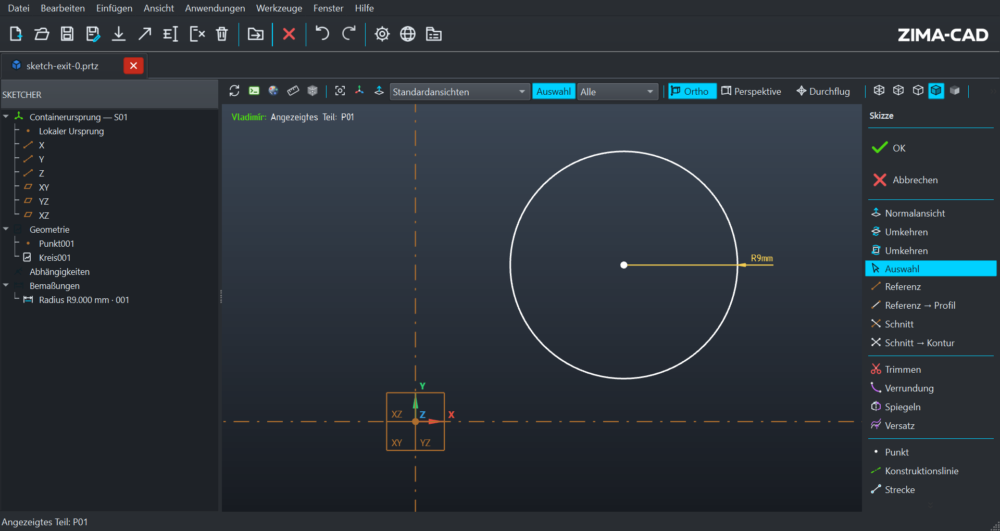
SkizzeAnleitung öffnen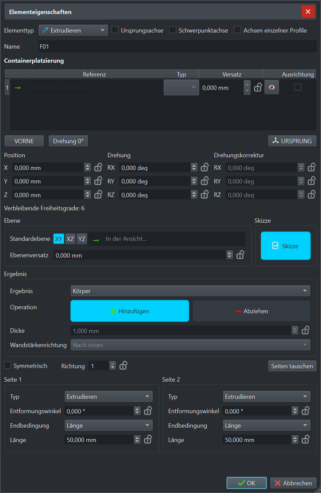
Extrusion und RotationAnleitung öffnen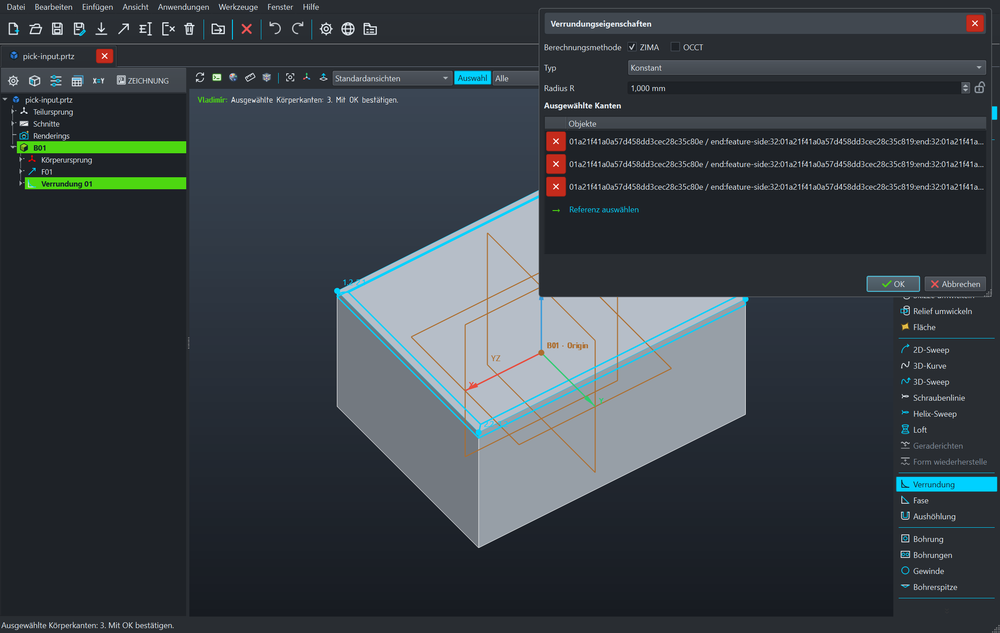
Verrundung und FaseAnleitung öffnen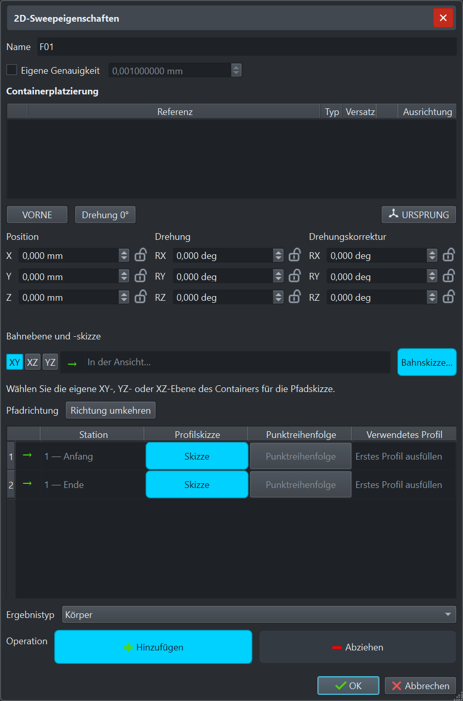
ProfilführungAnleitung öffnen BlechbearbeitungAnleitung öffnen
BlechbearbeitungAnleitung öffnen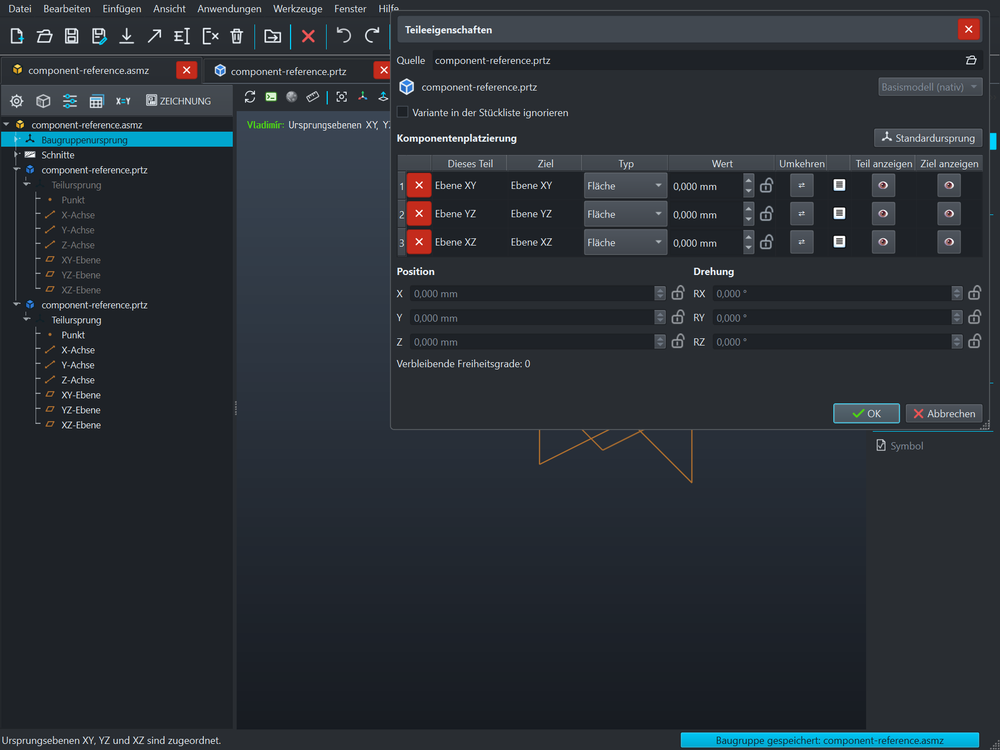
BaugruppenAnleitung öffnen ZeichnungenAnleitung öffnen
ZeichnungenAnleitung öffnen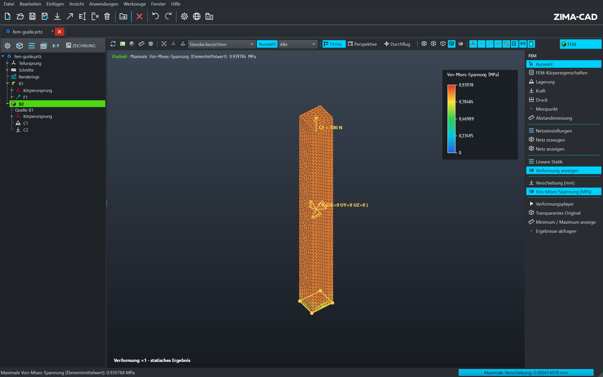
FEMAnleitung öffnen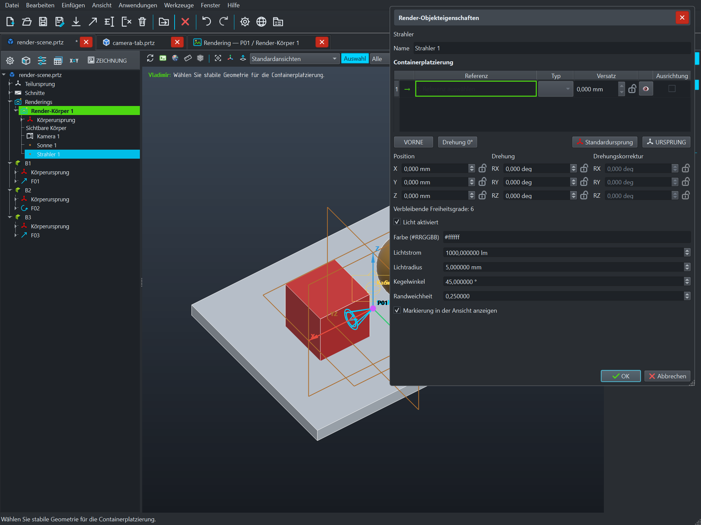
RenderingAnleitung öffnen CAMAnleitung öffnen
CAMAnleitung öffnenGemeinsame Befehle
Körper und abgeleitete Ergebnisse
Modellierung
2D-SweepFühren Sie Stationsprofile entlang eines eigenen ebenen Pfads.Anleitung öffnen3D-KurveDefinieren Sie einen räumlichen Pfad durch persistente native Punkte.Anleitung öffnen3D-SweepFühren Sie Profile entlang eines räumlichen, durch Punkte definierten Pfads.Anleitung öffnenAchseErstellen Sie eine endliche Bezugsachse mit unabhängig gesteuerten Enden.Anleitung öffnenAushöhlungHöhlen Sie berechnete Volumenkörper nach innen mit einer Wanddicke aus.Anleitung öffnenBohrerspitzeFügen Sie vorhandenen kreisförmigen Bohrungsböden konische Bohrspitzen hinzu.Anleitung öffnenBohrungErstellen Sie eine glatte oder innengewindete Bohrung in einer Operation.Anleitung öffnenBohrungenSchneiden Sie zylindrische Kanäle entlang von Skizzensegmenten.Anleitung öffnenEbeneErstellen Sie eine versetzte Bezugsebene für spätere Referenzen.Anleitung öffnenElementDefinieren Sie Referenzgeometrie oder ein Profil-Feature in einem Dialog.Anleitung öffnenExtrudierenExtrudieren Sie ein Profil als Volumen-, Flächen- oder dünnwandige Geometrie.Anleitung öffnenFaseFasen Sie gewählte Eingangskanten mit gesteuerten Abständen oder Winkeln an.Anleitung öffnenFlächeErstellen Sie eine durch eine eigene Skizze begrenzte ebene Fläche.Anleitung öffnenForm wiederherstellenStellen Sie nach dem Geraderichten die ursprünglich definierte Form wieder her.Anleitung öffnenGeraderichtenBerechnen Sie den geraden Zustand unterstützter geformter Volumen-Features.Anleitung öffnenGewindeFügen Sie einer zylindrischen Welle ein kosmetisches Außengewinde hinzu.Anleitung öffnenHelix-SweepFühren Sie einen Querschnitt entlang eines gesteuerten Helixpfads.Anleitung öffnenLoftErstellen Sie einen Übergang durch eigene ebene Profilskizzen.Anleitung öffnenPunktErstellen Sie einen persistenten Bezugspunkt am Feature-Ursprung.Anleitung öffnenRelief projizierenFügen Sie mit einer projizierten gefüllten Skizze Reliefmaterial hinzu oder entfernen Sie es.Anleitung öffnenRelief umwickelnErzeugen Sie erhabenes oder vertieftes Material aus umwickelten geschlossenen Konturen.Anleitung öffnenRotationDrehen Sie ein Profil um seine definierte Konstruktionsachse.Anleitung öffnenSchraubenlinieErstellen Sie einen eigenständigen Helixpfad ohne geführten Querschnitt.Anleitung öffnenSkizzeErstellen Sie eine eigene ebene Skizze als Referenz-Feature.Anleitung öffnenSkizze projizierenProjizieren Sie eine ebene Skizze auf ausgewählte Flächen.Anleitung öffnenSkizze umwickelnBilden Sie eine ebene Skizze auf unterstützte analytische Flächen ab.Anleitung öffnenVerdrehenVerdrillen Sie ein gefülltes Profil entlang seiner Schwerpunktachse.Anleitung öffnenVerrundungRunden Sie gewählte Kanten des tatsächlichen Eingangsvolumens oder einer vernähten Schale.Anleitung öffnen
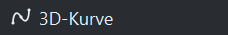
Flächen
Allgemeine FlächeErstellen Sie eine Fläche aus bearbeitbaren, dem Flächencontainer gehörenden Begrenzungen.Anleitung öffnenFläche füllenFüllen Sie einen geschlossenen Umfang über Referenzen auf vorhandene Begrenzungen.Anleitung öffnenFläche trimmenBehalten Sie einen ausgewählten Bereich einer berechneten Fläche.Anleitung öffnenFläche verdickenWandeln Sie eine freie Fläche oder zusammenhängende vernähte Schale in Material um.Anleitung öffnenFlächen aus VolumenkörperErsetzen Sie einen berechneten Volumenkörper durch seine exakte volumenlose Haut.Anleitung öffnenFlächen nähenVerbinden Sie berechnete Flächen zu einer zusammenhängenden Schale.Anleitung öffnenFlächenschnittErstellen Sie wiederverwendbare Schnittkurven und isolierte Kontaktpunkte.Anleitung öffnen
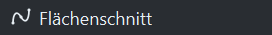
Mechanische Elemente
Blechteile
AbwickelnErstellen Sie einen abgewickelten Historienzustand geeigneter Blechbereiche.Anleitung öffnen BiegungErstellen Sie eine kreisbogenförmige Blechbiegung mit bearbeitbaren Endbreiten.Anleitung öffnenBlechErstellen Sie ein flaches Blech aus einer geschlossenen Skizze.Anleitung öffnenBlech aus KörperRekonstruieren Sie unterstützte Blechgeometrie aus einem berechneten Volumenkörper.Anleitung öffnenBlecheigenschaften…Legen Sie die gemeinsamen Blechstandardwerte des Bauteils fest.Anleitung öffnenBlechschnittSchneiden Sie durch die lokale Dicke getroffener Blechbereiche.Anleitung öffnenBlechübergangVerbinden Sie ein Halbrundprofil mit einem offenen abgerundeten Halbrechteck durch Blechwände und Biegungen.Anleitung öffnenDXFExportieren Sie die Fertigungskontur des aktiven Blechkörpers als DXF.Anleitung öffnenLinienbiegungBiegen Sie Blechmaterial um eine endliche Skizzenlinie.Anleitung öffnenProfilErzeugen Sie aus einem ebenen Pfad gewöhnliche Flach- und Biegungskinder.Anleitung öffnenRechteckiger BlechübergangVerbinden Sie zwei rechteckige Hüllen durch einen L- oder U-förmigen Blechübergang.Anleitung öffnenRotationsblechErstellen Sie zylindrisches oder konisches Blech durch Rotation eines Segments.Anleitung öffnenUmformenFügen Sie eine native Bibliotheksumformung in Blechmaterial ein.Anleitung öffnenVerdrilltes BlechErstellen Sie einen parametrisch verdrillten Blechstreifen ohne Skizzenbearbeitung.Anleitung öffnenZurückbiegenFühren Sie geeignete abgewickelte Blechbereiche in den gebogenen Zustand zurück.Anleitung öffnen
BiegungErstellen Sie eine kreisbogenförmige Blechbiegung mit bearbeitbaren Endbreiten.Anleitung öffnenBlechErstellen Sie ein flaches Blech aus einer geschlossenen Skizze.Anleitung öffnenBlech aus KörperRekonstruieren Sie unterstützte Blechgeometrie aus einem berechneten Volumenkörper.Anleitung öffnenBlecheigenschaften…Legen Sie die gemeinsamen Blechstandardwerte des Bauteils fest.Anleitung öffnenBlechschnittSchneiden Sie durch die lokale Dicke getroffener Blechbereiche.Anleitung öffnenBlechübergangVerbinden Sie ein Halbrundprofil mit einem offenen abgerundeten Halbrechteck durch Blechwände und Biegungen.Anleitung öffnenDXFExportieren Sie die Fertigungskontur des aktiven Blechkörpers als DXF.Anleitung öffnenLinienbiegungBiegen Sie Blechmaterial um eine endliche Skizzenlinie.Anleitung öffnenProfilErzeugen Sie aus einem ebenen Pfad gewöhnliche Flach- und Biegungskinder.Anleitung öffnenRechteckiger BlechübergangVerbinden Sie zwei rechteckige Hüllen durch einen L- oder U-förmigen Blechübergang.Anleitung öffnenRotationsblechErstellen Sie zylindrisches oder konisches Blech durch Rotation eines Segments.Anleitung öffnenUmformenFügen Sie eine native Bibliotheksumformung in Blechmaterial ein.Anleitung öffnenVerdrilltes BlechErstellen Sie einen parametrisch verdrillten Blechstreifen ohne Skizzenbearbeitung.Anleitung öffnenZurückbiegenFühren Sie geeignete abgewickelte Blechbereiche in den gebogenen Zustand zurück.Anleitung öffnen
Skizze
AbbrechenVerwerfen Sie Änderungen der aktuellen eingebetteten Skizzensitzung.Anleitung öffnenAbhängigkeitenKonfigurieren Sie automatische Erkennung und manuelle geometrische Beziehungen.Anleitung öffnenB-Spline – KontrollpunkteFormen Sie einen B-Spline über sein Kontrollpolygon.Anleitung öffnenBildFügen Sie ein Bild in eine Skizze ein und definieren Sie seine Platzierung.Anleitung öffnenBogenErstellen Sie einen Kreisbogen aus Mittelpunkt, Anfang und Ende.Anleitung öffnenDreipunktbogenErstellen Sie einen Kreisbogen ohne vorherige Mittelpunktangabe.Anleitung öffnenDXFImportieren Sie unterstützte DXF-Inhalte als Block in die aktive Skizze.Anleitung öffnenEllipseErstellen Sie eine Ellipse aus Mittelpunkt und zwei Halbachsen.Anleitung öffnenEllipsenbogenErstellen Sie einen begrenzten Ellipsenabschnitt mit echten Endpunkten.Anleitung öffnenFamilientabelle...Bearbeiten Sie Symbolvarianten innerhalb einer Familie.Anleitung öffnenGemeinsame TangenteErzeugen Sie eine gemeinsame Tangentenstrecke zwischen unterstützten Kurven.Anleitung öffnenInterpolationssplineErstellen Sie eine glatte Kurve durch bestätigte Punkte.Anleitung öffnenKonstruktionslinieErstellen Sie eine Hilfslinie für eine Achse oder Symmetrie.Anleitung öffnenKreisErstellen Sie einen exakten Kreis aus Mittelpunkt und Umfangspunkt.Anleitung öffnenLanglochZeichnen Sie eine Nut aus zwei Halbkreisen und tangentialen Strecken.Anleitung öffnenNormalansichtRichten Sie die Kamera senkrecht zur aktiven Skizze aus.Anleitung öffnenOKBeenden Sie die Skizzenbearbeitung und kehren Sie zum übergeordneten Kontext zurück.Anleitung öffnenPolylinieZeichnen Sie eine zusammenhängende Kette aus Strecken und unterstützten Bögen.Anleitung öffnenPunktSetzen Sie einen Punkt zur genauen Platzierung weiterer Geometrie.Anleitung öffnenRechteckErstellen Sie ein Rechteckprofil aus zwei gegenüberliegenden Ecken.Anleitung öffnenReferenzBinden Sie externe Geometrie als Referenz für Skizzenbedingungen und Maße ein.Anleitung öffnenReferenz → ProfilErzeugen Sie eine verknüpfte Kontur aus zugänglicher externer Geometrie.Anleitung öffnenSchnittErhalten Sie eine Referenz am Schnitt realer Geometrie mit der Skizzenebene.Anleitung öffnenSchnitt → KonturVerwenden Sie den Schnitt mit der Skizzenebene als verknüpfte Konturgeometrie.Anleitung öffnenSpiegelnErzeugen Sie gespiegelte Geometrie an einer Achse in der Skizze.Anleitung öffnenStreckeZeichnen Sie eine gerade Strecke zwischen zwei Punkten.Anleitung öffnenStücklistenbereichDefinieren Sie einen wiederholten Stücklistenbereich im Zeichnungsschriftfeld.Anleitung öffnenTextFügen Sie Text ein, der zur Skizze gehört.Anleitung öffnenTrimmenEntfernen Sie ausgewählte Kurventeile in einer bestätigten Skizzenänderung.Anleitung öffnenUmkehrenBetrachten Sie die aktive Skizze von der anderen Seite ihrer Ebene.Anleitung öffnenUmkehrenDrehen Sie die aktive Skizzenansicht in ihrer Ebene in 90°-Schritten.Anleitung öffnenUniverselle BemaßungGeben Sie ein aus gewählter Geometrie abgeleitetes Maß mit einem Befehl ein.Anleitung öffnenVerrundungVerbinden Sie zwei Skizzenkurven durch eine Verrundung mit vorgegebenem Radius.Anleitung öffnenVersatzErzeugen Sie eine abhängige Versatzkurve in genauem Abstand.Anleitung öffnenVieleckErstellen Sie ein regelmäßiges Vieleck mit 4, 6 oder 8 Seiten.Anleitung öffnen
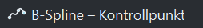
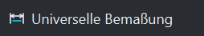
Baugruppen
Komponente einfügenFügt ein vorhandenes Teil oder eine Unterbaugruppe als referenzierte Komponente ein.Anleitung öffnenKomponente erstellenErstellt ein neues Quellteil oder eine Unterbaugruppe und fügt es in die aktive Baugruppe ein.Anleitung öffnenKurve aufwickelnWickelt eine eigene ebene Skizze als Baugruppenkurven auf analytische Flächen.Anleitung öffnenKurve projizierenProjiziert eine ebene Skizze als Baugruppenreferenzkurven auf ausgewählte Flächen.Anleitung öffnen
Zeichnungen
Ansicht einfügenFügt eine neue Grundansicht aus der ausgewählten Zeichnungsquelle ein.Anleitung öffnenAuswahlStellt die normale Auswahl von Ansichten und Annotationen auf dem Zeichnungsblatt wieder her.Anleitung öffnenBemaßungErstellt ein gemessenes Zeichnungsmaß mit Bezug zur Ansichtsgeometrie.Anleitung öffnenBemaßungen ausrichtenRichtet parallele gemessene Maße am zuerst ausgewählten Maß aus.Anleitung öffnenBemaßungen ein-/ausblenden…Steuert die Sichtbarkeit ursprünglicher Modellannotationen in einzelnen Zeichnungsansichten.Anleitung öffnenDetail einfügen…Erstellt ein vergrößertes Detail eines begrenzten Bereichs einer vorhandenen Ansicht.Anleitung öffnenDXFExportiert das aktuell aktive Zeichnungsblatt schnell als DXF.Anleitung öffnenKettenbemaßungErstellt oder erweitert eine Kettenbemaßung innerhalb einer Zeichnungsansicht.Anleitung öffnenKnick einfügenFügt einen Knick in die Maßhilfslinie eines gemessenen Zeichnungsmaßes ein.Anleitung öffnenPDFExportiert die gesamte Zeichnung schnell als PDF in den eingestellten relativen Ordner.Anleitung öffnenPositionsnummernFügt nummerierte Positionsangaben entsprechend der ersten Stücklistenebene des Blatts hinzu.Anleitung öffnenSymbolFügt ein Bibliothekssymbol unmittelbar als Zeichnungsblattannotation ein.Anleitung öffnenTextFügt normalen mehrzeiligen Text direkt auf einem Zeichnungsblatt hinzu.Anleitung öffnenUnterbrechung einfügenFügt eine Lücke in die Maßhilfslinie eines gemessenen Zeichnungsmaßes ein.Anleitung öffnen
FEM
AbstandsmessungVergleichen Sie ursprünglichen und verformten Abstand zweier Messpunkte.Anleitung öffnenDruckBelasten Sie eine ausgewählte Fläche mit Druck in MPa.Anleitung öffnenErgebnisse abfragenLesen Sie lokale Werte des angezeigten FEM-Ergebnisses ab.Anleitung öffnenFEM erstellenErstellen Sie einen FEM-Körper mit Bezug auf einen berechneten Volumenkörper im Teil.Anleitung öffnenFEM-KörpereigenschaftenBearbeiten Sie Quelle und Analyseart eines vorhandenen FEM-Körpers.Anleitung öffnenKraftDefinieren Sie eine gerichtete mechanische Kraft in Newton.Anleitung öffnenLagerungSperren Sie ausgewählte FEM-Verschiebungen mit einer mechanischen Bedingung.Anleitung öffnenLineare StatikStarten Sie die Berechnung gemäß Analyseart des aktiven FEM-Körpers.Anleitung öffnenMesspunktSpeichern Sie einen Punkt für wiederholtes Ablesen von FEM-Ergebnissen.Anleitung öffnenMinimum / Maximum anzeigenMarkieren Sie Minimum und Maximum der angezeigten Ergebnisgröße.Anleitung öffnenNetz anzeigenBlenden Sie ein bereits erzeugtes FEM-Netz ein oder aus.Anleitung öffnenNetz erzeugenErzeugen Sie ein Volumennetz für die aktuelle FEM-Definition.Anleitung öffnenNetzeinstellungenStellen Sie Netzdichte und Elementordnung vor der Vernetzung ein.Anleitung öffnenTemperatur [°C]Zeigen Sie das berechnete Temperaturfeld in °C an.Anleitung öffnenTransparentes OriginalVergleichen Sie das verformte Ergebnis mit einem transparenten Originalkörper.Anleitung öffnenVerformung anzeigenBlenden Sie ein gültiges FEM-Ergebnis ein oder aus.Anleitung öffnenVerformungsplayerStellen Sie visuelle Verformungsvergrößerung und Wiedergabe ein.Anleitung öffnenVerschiebung [mm]Zeigen Sie den Betrag der mechanischen Verschiebung in Millimetern an.Anleitung öffnenVon-Mises-Spannung [MPa]Zeigen Sie die von-Mises-Vergleichsspannung in MPa an.Anleitung öffnenWärmequelleGeben Sie die gesamte Wärmeleistung für einen ausgewählten Bereich an.Anleitung öffnen
Rendering
Bild rendernBerechnet im Hintergrund ein Bild der aktiven Render-Szene.Anleitung öffnenKameraFügt dem aktiven Render-Körper eine Kamera hinzu.Anleitung öffnenLichtFügt der gemeinsamen Render-Szene ein Punktlicht hinzu.Anleitung öffnenRender-GalerieÖffnet die Galerie und das verfügbare Ergebnis des aktiven Render-Körpers.Anleitung öffnenRender-KörpereigenschaftenBearbeitet Quellen und Einstellungen einer vorhandenen Render-Szene.Anleitung öffnenSonneFügt der Render-Szene gerichtetes Sonnenlicht hinzu.Anleitung öffnenStrahlerFügt einen gerichteten Strahler mit einstellbarem Lichtkegel hinzu.Anleitung öffnen
CAM
CAM berechnenBerechnet Werkzeugbahnen, Restmaterial und Kollisionsprüfungen.Anleitung öffnenCAM-AufspannungseigenschaftenBearbeitet Eingaben, Arbeitskoordinaten und Operationen einer bestehenden CAM-Aufspannung.Anleitung öffnenGenerisches NC-ProgrammZeigt berechnetes generisches Programm, Bewegungen und endgültiges Restmaterial.Anleitung öffnen
Keine passende Anleitung gefunden.